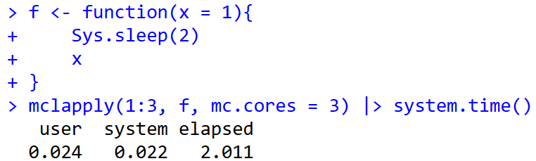
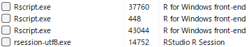

for文を分割する
# 通常のfor文
for(i in 1:10){sqrt(i)}
# 上記のfor文を2つに分ける
for(i in 1:5){sqrt(i)}
for(i in 6:10){sqrt(i)}我々が算数のテストを解くとき、普通は一番初めの問題から一つづつ、順番に解いていきます。Rも同じで、スクリプトとして書いたコードを上から1行ずつ評価し、演算します。for文などの繰り返し演算でも同じで、繰り返し回数分だけ順番に演算を行います。しかし、繰り返し演算に時間のかかる処理が含まれると、演算にはとても時間がかかります。
1人で計算せずに2人で計算すればテストは速く解けます。同様に、Rでも1つのRで演算せずに、2つ以上のRで演算すれば速く演算が終わります。for文であれば、以下のように2つに分けて、2つのRで計算すれば演算時間を半分ぐらいにできます。
for文を分割する
# 通常のfor文
for(i in 1:10){sqrt(i)}
# 上記のfor文を2つに分ける
for(i in 1:5){sqrt(i)}
for(i in 6:10){sqrt(i)}時間のかかる演算を少しでも速くするため、繰り返しのある演算を分割し、分割した演算を複数立ち上げたR（セッション）で演算することで計算速度を速める手法のことを並列演算（Parallel Computing）と呼びます。
Rのセッションとは、Rが起動して演算できる状態であることを示す言葉です。Rを起動するとRのセッションが1つ立ち上がります。同時にRをもう一つ開くこともでき、1つ目のRと2つ目のRで別の演算を行うことができます。
並列演算では、Rをたくさん立ち上げる、つまりセッションをたくさん準備して、そのそれぞれのセッションに演算を分割することで演算速度を速めます。この立ち上げたセッションのまとまりのことをクラスターとも呼びます。
重い演算を用いる統計のパッケージでは、パッケージの機能自体に並列演算が組み込まれている場合があります。一方で、自分で書いたスクリプトで並列演算を行いたい場合、自分で演算を分割して複数のセッションに投げる、というのは大変ですので、パッケージを利用してRに並列演算を任せることになります。
並列演算には大きく分けて、SocketとForkと呼ばれる2つの方法があります。
あまり変わらないように見えますが、Socketでは現在のセッションの情報を別のセッションでは持ち越せない、つまりパッケージの読み込みの状態や変数は別のセッションには持ち込まれないのに対し、Forkではパッケージの読み込みの状態や変数も（メモリを共有する形で）持ち込めます。
Socketでは各セッションでパッケージの読み込みや変数の設定を行う必要があり、時間が取られます。一方でForkはパッケージの読み込みや変数の設定を行うことなく演算ができます。
何より違うのは、Windowsでは基本的にForkを使えない、ということです。ですので、LinuxやMacOSではSocketもForkも使えるのに対し、WindowsではSocketしか使えません。また、RStudioはForkと相性があまりよくありません。自分のPCでForkが利用可能かどうかは、以下のparallelly::supportsMulticore関数で確認することができます[@parallelly_bib]。Forkが利用可能であればTRUEが、利用できなければFALSEが返ってきます。
parallelly::supportsMulticore関数でForkが使えるか確認する
pacman::p_load(parallelly)
supportsMulticore()[1] FALSECRAN: Task ViewsにはRmpi[@rmpi_bib]とsnow[@snow_bib]がRの並列演算のコアパッケージであるとされています。これらは基本のパッケージで、他のパッケージの開発などに用いることが想定されており、Rのユーザーが自分のスクリプトで利用するのは難しいです。
ユーザー向けの並列演算のパッケージとして、現在では主に以下の3つが利用されています。
parallelパッケージ[@parallel_bib]foreach + doParallelパッケージ[@foreach_bib; @doParallel_bib]futureパッケージ[@RJ-2021-048]parallelが最も昔から用いられているパッケージで、長年よく利用されていたのがforeachとdoParallelパッケージです。futureは2017年頃から開発が始まり、2021年にver.1.0となった新しいパッケージです。futureにはfutureverseというパッケージ群があり、parallel・foreachよりも簡単で安全に並列演算ができるパッケージとなっています。また、2026年にはfuturize[@futurize_bib]というfutureをより簡単に利用できるパッケージが発表されています。
ここではまずparallel、foreachから説明しますが、とりあえず並列演算を試してみたい、という場合には右のメニューからfutureパッケージの記事を選んで読んでいただければと思います。
まずはparallelパッケージから説明します。parallelはSocket・Forkの両方に対応し、19章で説明したapply関数に相当する演算を並列化することができるパッケージです。
まずはparallelパッケージをインストールし、読み込みます。21章で紹介した演算時間計測のためのパッケージであるtictoc[@tictoc_bib]も同時に読み込んでおきます。
parallelパッケージの読み込み
pacman::p_load(parallel, tictoc)次に、自分のPCのCPUのコアの数をdetectCores関数で調べます。現代のPCに搭載されているCPUは、通常6個以上のコアを持ちます。このコアはPCでマルチタスクを行うために用いられているCPUの演算の基本単位で、並列演算の場合には複数のコアを利用して演算を行います。私の使っているPCではコアは20個ですので、並列演算は最大で20まで設定できます。
ただし、すべてのコアをRに捧げてしまうと他のことがPCでできなくなったり、演算が遅くなってしまいますので、利用するコアは最大でもdetectCoresの返り値から1を引いた数、私のPCであれば19、で設定するのがよいでしょう。
CPUのコアの数を調べる
detectCores()[1] 20まずは通常の演算（上から順番に計算するのでsequentialと呼ばれます）で重めの計算をしてみます。以下の関数は2秒待った後で引数xをそのまま返す関数です。
2秒待つ関数
f <- function(x = 1){
Sys.sleep(2)
x
}次に、19章で説明したlapply関数でf関数の演算を3回行います。この演算にかかる時間をsystem.time関数で調べると、6秒程度かかっていることがわかります。2秒かかる関数の演算を3回繰り返しているので当然の結果です。
lapply関数で演算時間を計測
lapply(1:3, f) |> system.time() user system elapsed
0.00 0.00 6.07 次に、parallelパッケージでForkを利用したlapplyの計算を行うmclappply関数を使ってみます。mc.coresは利用するコアの数を指定するための引数です。ForkはWindows PCでは利用できないため、エラーが出て演算が行われません。
ForkはWindowsでは利用できない
mclapply(1:3, f, mc.cores = 3) |> system.time()Error in `mclapply()`:
! 'mc.cores' > 1 is not supported on WindowsTiming stopped at: 0 0 0mclapplyをDockerのrocker/rstudio（Linuxの環境）で実行すると2秒で計算が終わります。2秒かかるf関数を3回行う演算がf関数1回分で終わっていることになります。ですので、LinuxやMacOSではmclapplyを用いることでForkでの並列演算を行うことができています。

WindowsではSocketを用いる関数であるparLapply関数を用いて並列演算を行います。ただし、parLapply関数はそのままでは並列演算を行うことができず、エラーが出ます。
parLapply関数のエラー
parLapply(1:3, f) |> system.time()Error in `checkCluster()`:
! not a valid clusterTiming stopped at: 0.02 0 0エラーメッセージに示された通り、parLapply関数を用いる場合にはまずクラスターを設定する必要があります。クラスターはmakeCluster関数で設定できます。makeCluster関数の引数は数値で、detectCores関数で調べたコアの数より小さい数値を入力します。以下の例では3つのクラスターを設定しています。
makeCluster関数はclという変数に代入しておき、後ほどparLapply関数の引数として用います。
クラスターの設定：makeCluster関数
cl <- makeCluster(3)makeCluster関数を実行後、リソースモニターで確認すると、RstudioのRセッション（rsession-utf8.exe）以外に3つのRセッション（Rscript.exe）が実行されていることがわかります。

この状態でparLapply関数にclを引数として設定し実行すると、エラーが出ずに演算が2秒程度で完了します。parLapply関数でも並列演算によって、2秒かかるf関数を3回実行した時、1回分の演算時間で計算が完了していることが分かります。
parLapply関数での並列演算
parLapply(cl, 1:3, f) |> system.time() user system elapsed
0.00 0.00 2.02 makeCluster関数で起動したRのセッションはRを閉じても起動したままになってしまいます。並列演算が終わった後には、stopCluster関数で起動したRのセッションを閉じます。
stopCluster関数でセッションを閉じる
stopCluster(cl)ここまでがparallelパッケージの基本的な使い方です。以下にmclapply、parLapply以外の並列演算用の関数を示します。
| 関数名 | 対応するapply関数 | 演算の方法 |
|---|---|---|
| mclapply | lapply | Fork |
| mcmapply | mapply | Fork |
| parLapply | lapply | Socket |
| parSapply | sapply | Socket |
| parApply | apply | Socket |
| parRapply | apply(MARGIN = 1) | Socket |
| parCapply | apply(MARGIN = 2) | Socket |
| clusterMap | mapply | Socket |
次に、パッケージを利用する関数について、Socketで利用する場合を見ていきます。以下の関数f2はstringrを読み込んだ後で定義されており、stringrで提供されている関数str_cを用いています。
パッケージを用いる関数
library(stringr)
f2 <- function(x){
str_c(x, ", ", Sys.time())
}lapply関数でf2関数を利用した場合には、特に問題なく演算できます。また、Forkを用いるmclapplyでも問題なく並列演算を行うことができます。
lapply関数でf2関数を用いる
lapply(1:3, f2)[[1]]
[1] "1, 2026-10-14 07:01:18.084508"
[[2]]
[1] "2, 2026-10-14 07:01:18.0864"
[[3]]
[1] "3, 2026-10-14 07:01:18.086799"一方で、Socketの並列演算を行うparLapply関数でf2関数を呼び出すと、エラーが出ます。これは、Socketでは現在のセッションで呼び出したパッケージや定義した変数は別のセッションにはコピーされないため、パッケージで設定されている関数（str_c）が利用できないためです。
Socketではパッケージの状態はコピーされない
cl <- makeCluster(3)
parLapply(cl, 1:3, f2)Error in `checkForRemoteErrors()`:
! 3 nodes produced errors; first error: could not find function "str_c"各セッションでパッケージをロードする場合には、clusterEvalQ関数を用います。clusterEvalQ関数は第一引数にmakeClusterで作成したクラスター（cl）、第2引数に各セッションで読み込むコードを表記します。あらかじめclusterEvalQでパッケージを読み込んでおくことで、各セッションでパッケージを読み込み、パッケージを用いた演算を行うことができます。
clusterEvalQ関数でパッケージを用いる
clusterEvalQ(cl, library(stringr))[[1]]
[1] "stringr" "stats" "graphics" "grDevices" "utils" "datasets"
[7] "methods" "base"
[[2]]
[1] "stringr" "stats" "graphics" "grDevices" "utils" "datasets"
[7] "methods" "base"
[[3]]
[1] "stringr" "stats" "graphics" "grDevices" "utils" "datasets"
[7] "methods" "base" parLapply(cl, 1:3, f2)[[1]]
[1] "1, 2026-10-14 07:01:18.43097"
[[2]]
[1] "2, 2026-10-14 07:01:18.430933"
[[3]]
[1] "3, 2026-10-14 07:01:18.430954"同様に、現在のセッションで変数yを定義し、このyを用いた関数を並列演算で使ってみます。
関数外の変数を利用する関数
y <- 2
f3 <- function(x){
x + y
}この場合もやはりparLapply関数ではyを読みだせず、エラーとなります。Socketではパッケージだけでなく、変数の設定も別途指示する必要があります。
変数yが各セッションで設定されていないためエラー
parLapply(cl, 1:3, f3)Error in `checkForRemoteErrors()`:
! 3 nodes produced errors; first error: object 'y' not found上記のパッケージの設定の場合と同じく、clusterEvalQ関数で変数yを設定しておくと、parLapplyの演算が実行されます。
clusterEvalQ関数で変数を指定する
clusterEvalQ(cl, y <- 2)[[1]]
[1] 2
[[2]]
[1] 2
[[3]]
[1] 2parLapply(cl, 1:3, f3)[[1]]
[1] 3
[[2]]
[1] 4
[[3]]
[1] 5現在のセッションからSocketのセッションへと変数を持ち出す場合、clusterExport関数を利用することもできます。clusterExport関数はクラスターの変数clと文字列の変数名を引数に取ることで、現在のセッションで設定されている変数を各セッションに持ち出すことができます。
clusterExport関数で設定を持ち出す
clusterExport(cl, "y")
parLapply(cl, 1:3, f3)[[1]]
[1] 3
[[2]]
[1] 4
[[3]]
[1] 5とは言え、たくさんの変数やパッケージをSocketのセッションに持ち込むのは大変です。利用するパッケージや変数は関数内で指定する方がよいでしょう。
foreachはapply関数群に近い演算を行うforeach関数を提供しているパッケージです。foreachはfor文っぽい構文で利用します。ただし、foreachはfor文というわけではないので、やや分かりにくいところのある関数ではあります。
foreachはそれだけでは並列演算に用いることはできませんが、doParallelと組み合わせることで並列演算を行うことができます。doParallelはforeachに並列演算を持ち込むためだけのパッケージで、foreachとdoParallelはほぼ常にセットで利用されます。
パッケージの読み込み
pacman::p_load(foreach, doParallel)foreach関数は以下のような式で利用します。for文と同じように、foreachの後ろのカッコにはイテレーターのベクターを設定します。for文でのカッコと中カッコ（{}）の間には%do%という演算子を用います。
foreachの式
# for(i in vec){eval}と同じ
foreach(i = vec) %do% {eval}forとforeachの違いは式の形だけでなく、返り値にもあります。for文はそれ自体は何も返しませんが、foreachは返り値があります。返り値のデフォルトはリストで、{eval}で演算したものをリストの要素として返します。
foreachの返り値
foreach(i = 1:3) %do% {f(i)}[[1]]
[1] 1
[[2]]
[1] 2
[[3]]
[1] 3ですので、上記のforeach関数は下のlapplyと同じ演算になります。
foreachと同じ演算のlapply
lapply(1:3, f)[[1]]
[1] 1
[[2]]
[1] 2
[[3]]
[1] 3また、for文をネストする場合と同じく、foreachもネストすることができます。以下のforeach文ではiとjを繰り返す演算を行っています。このforeachとforeachを繋いでネストする場合には、%:%という演算子を用います。
%:%でネストする
# for(i in 1:2) for(j in 1:2){paste("i=", i, "j=", j, "i+J=", i + j)}とほぼ同じだが、
# 返り値があり、リストを返すところが異なる
foreach(i = 1:2) %:% foreach(j = 1:2) %do% {paste("i=", i, "j=", j, "i+J=", i + j)}[[1]]
[[1]][[1]]
[1] "i= 1 j= 1 i+J= 2"
[[1]][[2]]
[1] "i= 1 j= 2 i+J= 3"
[[2]]
[[2]][[1]]
[1] "i= 2 j= 1 i+J= 3"
[[2]][[2]]
[1] "i= 2 j= 2 i+J= 4"foreach文はそのままでは並列演算ではないため、2秒かかる関数であるf関数を用いると、繰り返した分だけ時間がかかります。
並列演算ではないforeach
tic()
a <- foreach(i = 1:3) %do% {f(i)}
toc()6.06 sec elapsedforeachの引数.combineには演算結果を結合する方法を指定することもできます。.combine=cを指定すると返り値はベクター、.combine=cbindを指定すると返り値は行列になります。
.combine引数を指定する
foreach(i = 1:3, .combine = c) %do% {f(i)} # 返り値はベクター[1] 1 2 3foreach(i = 1:3, .combine = cbind) %do% {f(i)} # 返り値は行列 result.1 result.2 result.3
[1,] 1 2 3foreach関数のカッコの間の演算子である%do%を%dopar%に変更すると、並列演算型のforeachの記法になります。ただし、%do%を%dopar%に変更するだけでは並列演算を行うことはできません。parallelの場合と同様に、foreachでもあらかじめクラスターを設定する必要があります。
%dopar%演算子
tic()
a <- foreach(i = 1:3) %dopar% {f(i)}Warning: executing %dopar% sequentially: no parallel backend registeredtoc()6.09 sec elapsedクラスターの設定はparallelパッケージとほぼ同じで、makeCluster関数で設定します。makeCluster関数の返り値はregisterDoParallel関数の引数とします。
doParallel：クラスターの設定
cores <- detectCores() - 1
cl <- makeCluster(cores)
registerDoParallel(cl)クラスターを設定した上でforeach関数を%dopar%演算子で実行すると、並列演算を行うことができます。
foreachで並列演算
tic()
a <- foreach(i=1:19) %dopar% {f(i)}
toc()2.1 sec elapsed%dopar%を用いた演算はSocketですので、演算にパッケージを用いる場合にはエラーが出ます。
foreachでのパッケージの取り扱い
a <- foreach(i=1:19) %dopar% {f2(1)}Error in `{
f2(1)
}`:
! task 1 failed - "could not find function "str_c""foreachでは.packages引数にパッケージ名を文字列で指定することで、Rの各セッションでパッケージを読み込ませることができます。parallelと同様に、関数の中でパッケージの呼び出しや変数の定義を行った方が演算しやすいでしょう。
.packages引数
a <- foreach(i=1:7, .packages = "stringr") %dopar% {f2(1)}parallelの場合と同様に、並列演算のためのRのセッションを閉じる時にはstopCluster関数を用います。
セッションの終了
stopCluster(cl)futureパッケージは最後発の、よりモダンな並列演算のためのパッケージです。futureは基礎的な並列演算の関数を提供するためのパッケージで、このfutureを使ったパッケージ群（future.apply、furrr、doFuture、futurize）と共にfutureverseというパッケージ群が整備されています。ただし、futureverseにはtidyverseのように一度にパッケージをインストール・ロードできるような仕組みはありません。
パッケージの読み込み
pacman::p_load(future)futureでは、並列演算の方法をplan関数で指定します。plan(sequential)は通常のRと同じ演算、plan(multisession)はSocketでの並列演算、plan(multicore)はForkでの並列演算をそれぞれ指定します。
plan関数でモードの選択
plan(sequential)この他にもplan関数の引数があり、それぞれ異なる設定で並列演算を組むことができます。plan関数の引数の一覧を以下の表に示します。
| 引数の設定 | 演算の方法 |
|---|---|
| sequential | 通常の演算（上から順に演算） |
| multisession | Socketによる並列演算 |
| cluster | 複数のPC（リモートを含む）を利用したSocketによる並列演算 |
| multicore | Forkによる並列演算 |
| callr | callrパッケージを用いた並列演算。メモリがすぐに解放される |
| mirai_multisession | miraiパッケージを用いた並列演算。遅延が小さい |
| mirai_cluster | miraiパッケージを用いた並列演算。miraiデーモンというセッションを用いる。複数PCを利用可能 |
futureでは、並列演算を行う部分をfuture関数で表現します。ただし、このfuture関数の返り値はそのまま呼び出すことはできません。future関数の返り値はvalue関数の引数に取り、value関数の返り値としてfuture関数での演算結果が返ってきます。
以下の例ではplan(sequential)を指定しているため、future関数の部分は並列ではなく、順番に評価されています。
future関数とvalue関数
tic()
# 以下の3つが並列演算される部分
a <- future(f(1))
b <- future(f(2))
d <- future(f(3))
value(a)[1] 1value(b)[1] 2value(d)[1] 3toc()6.13 sec elapsedplan(multisession)を指定すると並列演算となり、全体の演算が2秒程度で完了します。
multisession：並列演算
plan(multisession)
tic()
a <- future(f(1))
b <- future(f(2))
d <- future(f(3))
x <- value(a)
y <- value(b)
z <- value(d)
toc()2.11 sec elapsedただし、plan(multisession)を指定すると利用できる最大数のセッションが準備されてしまいます。plan関数ではworkers引数を指定することで準備するセッションの数を指定することができます。
workersを指定する
plan(multisession, workers = 3)future関数は()の中に中カッコ（{}）を設定し、複数行のスクリプトを記述することもできます。
future関数の引数に複数の要素を設定する
a <- future({x <- 1; x * 10})futureとvalueで呼び出す方法はやや迂遠です。futureでは、%<-%という形の演算子でfutureとvalue関数を合わせた演算を行うことができます。
%<-%演算子
a %<-% {f(1)}
b %<-% {f(2)}
d %<-% {f(3)}futureでは現在のセッションで読み込んでいるパッケージを自動的にクラスターで読み込んだ上で演算してくれる場合もあります。以下の例ではstringrの関数を用いていますが、問題なく演算が行われています。また、読み込むパッケージを指定する場合にはfuture関数のpackages引数として文字列で指定することもできます。
futureでのパッケージの読み込み
# パッケージを明示するときは a <- future({f2(1)}, packages="stringr") とする
a %<-% {f2(1)}
b %<-% {f2(2)}
d %<-% {f2(3)}
c(a, b, d)[1] "1, 2026-10-14 07:02:09.172687" "2, 2026-10-14 07:02:09.1727"
[3] "3, 2026-10-14 07:02:09.179645"ただし、変数を指定する場合にはクラスターで変数を指定してくれない場合もあります。
変数の指定がうまくいかない場合
reset <- FALSE
x <- 1
y %<-% {if (reset) x <- 0; x + 1 }
yError:
! object 'x' not foundこのような場合には、futureに与える式の中で一度変数を宣言してやるとうまくいくようになります。
変数の持ち込み：futureの演算内で変数を宣言する
reset <- FALSE
x <- 1
y %<-% { x; if (reset) x <- 0; x + 1 }
y[1] 2futureではparallelやforeach + doParallelのようにクラスターを止める関数はありません。Rが閉じればクラスターも止まりますが、明示的にクラスターを止める場合にはplan(sequential)を実行するとよいでしょう。
上記の通りfutureでは簡単に並列演算を実装することができます。しかし、並列演算するそれぞれのコードはいちいち記述しないといけませんし、apply関数などで利用するにはやや不便です。
この問題に対応するため、futureverseではapply関数、purrrの関数（44章参照）[@purrr_bib]、foreachでの並列演算を行うための以下の3つのパッケージ群を備えています。
future.apply：apply関数の並列化[@RJ-2021-048]furrr：purrrの並列化[@furrr_bib]doFuture：foreachの並列化[@RJ-2021-048]3つのパッケージをロードすることで、簡単にfutureを用いた並列化の演算を行うことができます。future.applyではfuture_applyなどの関数（apply関数の並列化）、furrrではfuture_mapなどの関数（purrr::mapの並列化）、doFutureでは%dofuture%演算子を使うことでそれぞれfutureでの並列演算を行うことができます。
future.apply
pacman::p_load(future.apply, furrr, doFuture)
future_apply(iris[, 1:4], 2, mean)Sepal.Length Sepal.Width Petal.Length Petal.Width
5.843333 3.057333 3.758000 1.199333 furrr
future_map(1:5, sqrt)[[1]]
[1] 1
[[2]]
[1] 1.414214
[[3]]
[1] 1.732051
[[4]]
[1] 2
[[5]]
[1] 2.236068doFuture
foreach(i = 1:3) %dofuture% {f(1)}[[1]]
[1] 1
[[2]]
[1] 1
[[3]]
[1] 1futureverseでは、プログレスバーを表示するためにprogressrパッケージ[@progressr_bib]を用いています。
progressrのロード
pacman::p_load(progressr)progressrでプログレスバーを表示する場合には、演算の途中でprogressor関数を変数pに代入し、このpを繰り返し演算の内で関数として実行する必要があります。
以下の例では、progressorの例に記載されている通り、0.5秒ごとに足し算を行う関数であるslow_sum関数を定義しています。
progressor関数では、イテレータで評価する値をalong引数に指定します。イテレータ内ではp関数を実行します。準備はこれだけです。
progressrを使うための関数を準備する
slow_sum <- function(x){
# プログレスバーの進み具合を評価するため、progressor関数を準備
p <- progressor(along = x)
v <- 0
for(i in 1:length(x)){
Sys.sleep(0.5)
v <- v + x[i]
# この関数を評価してプログレスバーが進む
p()
}
v
}次に、プログレスバーを表示させる必要があります。しかし、単にslow_sum関数を実行してもプログレスバーは表示されません。
slow_sum関数を実行
slow_sum(1:10)[1] 55プログレスバーを表示させるには、handlers関数にglobal=TRUEを指定して実行しておく必要があります。また、プログレスバーの表示を終える場合にはglobal=FALSEを指定します。
ただし、このhandlers(global = TRUE)をQuartoで実行するとエラーが出ます。理由は分からないのですが、qmdの実行時にhandlersがすでに呼び出されているようです。
handlers関数でプログレスバーを表示する
handlers(global = TRUE)
slow_sum(1:10)
handlers(global = FALSE)with_progress関数を用いるとQuartoを用いている場合でもプログレスバーを表示させることができます。
with_progress関数を用いる
slow_sum(1:10) |> with_progress()[1] 55この他にも、プログレスバーの表示方法や完了時の音の設定など、プログレスバーの細かな調整を行うことができます。
とは言っても、それぞれのパッケージにはたくさんの関数が設定されており、覚えるのも大変です。昔から用いていたapplyやpurrr、foreachの関数をそのまま並列化できたほうが便利です。
そこで、futureverseでは今まで用いていた関数をそのままfutureの手法で並列化するためのパッケージであるfuturizeパッケージを提供しています。
このfuturizeパッケージのfuturize関数を用いるだけで、今まで使っていた関数を並列化することができます。
futurizeを利用する際にはfuture.apply、furrr、doFutureも読み込む必要があります。
futurizeパッケージの呼び出し
pacman::p_load(futurize, future.apply, furrr, doFuture)futurize関数の使い方は簡単で、planで並列化の方法を指定した後、applyやmap、foreach関数の後にfuturize関数をパイプで繋ぐだけです。futurize関数をパイプで繋ぐだけでそれぞれの関数をfuture式の並列演算に変換（futurize）することができます。
futurize関数
apply(iris[, 1:4], 2, mean) |> futurize() # future_applyと同じSepal.Length Sepal.Width Petal.Length Petal.Width
5.843333 3.057333 3.758000 1.199333 map(1:5, f) |> futurize() # future_mapと同じ[[1]]
[1] 1
[[2]]
[1] 2
[[3]]
[1] 3
[[4]]
[1] 4
[[5]]
[1] 5foreach(i = 1:3) %do% {f(1)} |> futurize() # %doFuture%を用いるのと同じ[[1]]
[1] 1
[[2]]
[1] 1
[[3]]
[1] 1